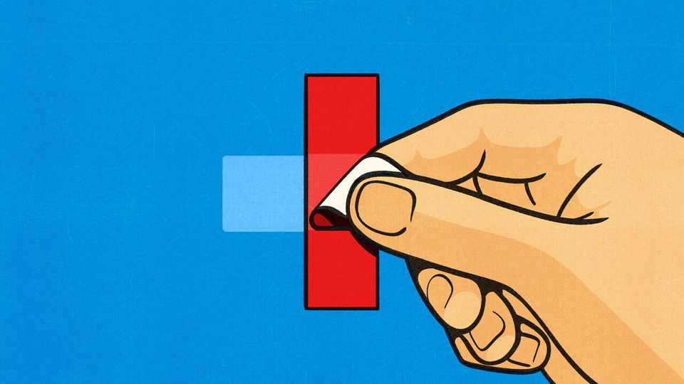
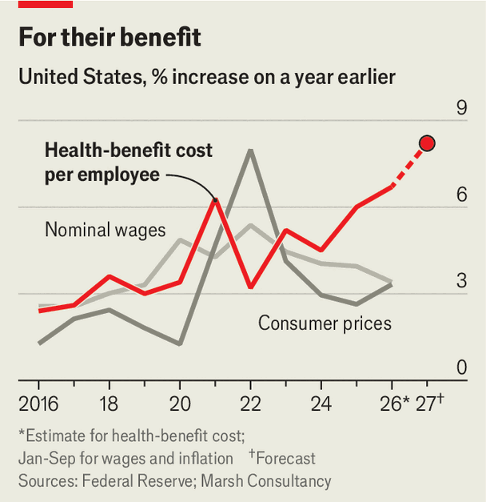

American workers face a surge in health costs
Employer-sponsored insurance, the backbone of American coverage, is becoming more frail

Nov 12th 2026
Health care ranks high on Democrats’ agenda in Congress, as they seek to restore subsidies to buy individual insurance and reverse cuts to Medicaid, the health programme for the poor. However, a different problem looms, too. In the coming weeks, the 157m Americans who receive insurance through employers will have to choose a plan for next year. The cost of their insurance is due to rise by an average of 8% in 2027, according to Marsh, a consultancy, the biggest price hike in more than 20 years.
Employer-sponsored health care has long been the backbone of American coverage. About half of Americans get their health insurance through their job, that of their spouse or their parents. But as health insurance gets ever more expensive, bosses are looking for ways to trim their spending, whether through making workers pay for more of their care in cash, cutting coverage or even scrapping health benefits entirely. Already, six in ten Americans worry about affording health care, according to KFF, a health-research outfit, a higher share than worry about petrol. As employers strip back coverage, that anxiety is sure to rise.
Because health premiums paid by employers are excluded from income and payroll taxes, the government incentivises bosses to compensate workers by offering them health insurance. However, employers are problematic middle men. An employer generally covers about 80% of an insurance plan’s cost, with staff paying the remaining 20% themselves, or an average of $7,500 for a family plan. Fast-growing insurance costs borne by employers limit workers’ salaries, usually in a way that is not transparent to staff.

Health costs spiked in 2021 as Americans resumed the surgeries and treatments that they had put off during the covid pandemic. But in recent years, premiums have risen faster than inflation and nominal wages (see chart).
There are many reasons for this. Years of consolidation have given hospitals greater pricing power. Workers are seeking more treatment for behavioural health and innovative cancer medicines are helping to drive up premiums, too. GLP-1s, popular anti-obesity medicines, have probably pushed up premium costs by about a percentage point, according to Marsh. A similar share comes from new artificial-intelligence tools that help hospitals to spot extra charges that a human might miss.
Some employers will shop around for different coverage, but all insurers face higher costs. So firms are changing their offer to staff. In 2026 roughly two in five large employers made workers pay a bigger share of their premiums, according to a survey by KFF. Next year, with costs rising even more quickly, monthly payment increases of around 10% are not out of the question, says Beth Umland of Marsh.
Another option for employers is to restrict who qualifies for insurance. Next year Disney, a big entertainment firm, will rescind coverage from employees’ spouses if they can get insurance through their own employer, a step that is hardly draconian. Other firms may impose more potent restrictions, for instance by limiting patients’ choice of doctors and services. Starbucks has stopped covering GLP-1s for weight loss, with more firms due to follow suit: 10% of the companies now offering GLP-1s to treat obesity don’t plan to do so next year, according to the Business Group on Health, an advocacy group.
Some employers may go further, eliminating health insurance completely. Small companies have been dropping coverage for decades, explains Paul Fronstin of the Employee Benefit Research Institute, a think-tank. In 2000 more than 80% of firms with 10-49 employees offered health insurance to their staff—now, just 59% do, a share that looks set to decline. The exchanges created by the Affordable Care Act, better known as Obamacare, offered individuals a new way to shop for insurance. However, premiums there are rising even more quickly.
With unemployment still low, companies have tried to avoid severe cuts, lest they drive away needed workers. Should the job market loosen, they might trim health benefits further. Democrats such as Abdul El-Sayed, a senator-elect from Michigan, have revived calls for universal health coverage. More cuts to employer-sponsored insurance give them new ammunition for their argument. ■
Stay on top of American politics with The US in brief, our daily newsletter with fast analysis of the most important political news, and Checks and Balance, a weekly note that examines the state of American democracy and the issues that matter to voters.